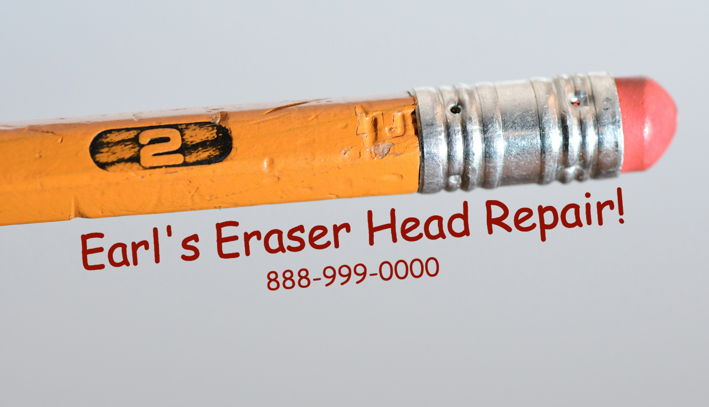

Is your pencil eraser running low? Leaving dark smudges across tests and
important documents? Crumbling?

Earl's Eraser Head Repair is a local business located in Greensboro, NC. Earl's is a
chain that was started by our founder, John Earl in 1889. We know all too well the
horrors of a faulty eraser. John's vision was to make that experience a thing of the
past! Come down and visit us at 123 Greensboro Street, Greensboro NC!
If you have any questions, feel free to contact us here!